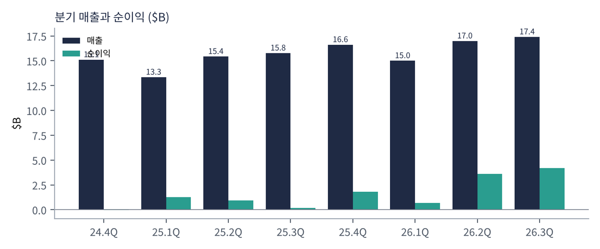
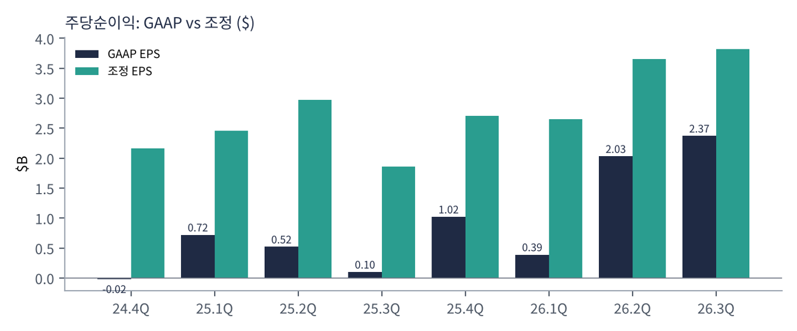
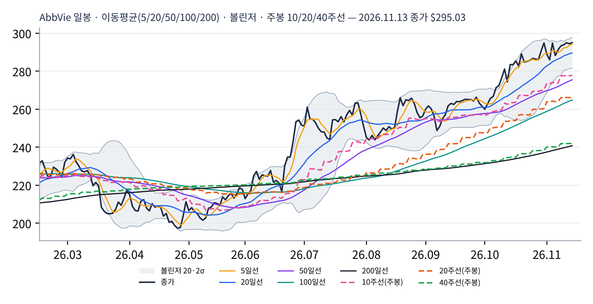
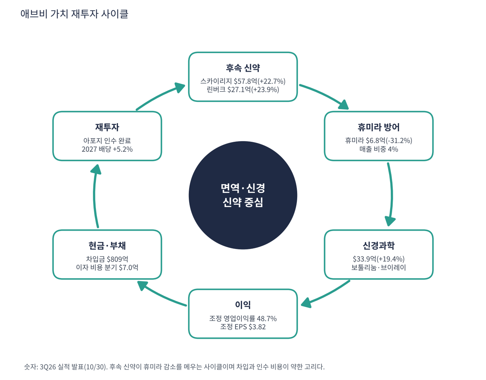

애브비는 2013년 애보트에서 분리된 미국 제약사로 면역(스카이리지·린버크·휴미라), 신경과학, 종양, 미용(보톡스 코스메틱) 사업을 한다. 휴미라 특허 만료의 충격을 후속 약 스카이리지와 린버크로 메우며 매출이 다시 10% 이상 성장하지만, 차입금이 $809억으로 크고 인수 연구개발비가 조정 EPS를 흔드는 회사다.
| 항목 | 내용 |
|---|---|
| 종목 | AbbVie Inc. (ABBV) · NYSE · 제약 · 본사 미국 일리노이주 노스시카고 |
| 밸류에이션 | PER 50.8배(GAAP TTM), 조정 기준 약 23.0배 · P/S 7.9배 (11/13 종가 $295.03) |
| 최근 분기(3Q26) | 매출 $174.0억(+10.3%), 순이익 $42.1억, GAAP EPS $2.37, 조정 EPS $3.82(전년 동기 $1.86의 두 배 이상) |
| 부문(3Q) | 면역 $91.7억(+16.3%), 신경과학 $33.9억(+19.4%), 종양 $17.0억(+0.8%), 미용 $11.8억(-1.4%) |
| 주요 약 | 스카이리지 $57.8억(+22.7%), 린버크 $27.1억(+23.9%), 휴미라 $6.8억(-31.2%) |
| 마진 | 조정 매출총이익률 85.1%, 조정 영업이익률 48.7%, 순이자비용 $7.0억 |
| 현금·부채 | 현금 등 약 $108억, 총차입금 약 $809억, TTM 잉여현금 약 $189억, TTM EBITDA 약 $316억(스캐너) |
| 가이던스(2026) | 조정 EPS $13.95~13.99(기존 $13.76~13.96에서 상향, 인수 연구개발비 -$0.69 포함). 2027 배당 +5.2% |
| 다음 실적 | 4Q26 실적: 2027년 2월 3일 예정(트레이딩뷰) |
| 직책 | 인물 | 역할·특징 |
|---|---|---|
| 회장·CEO | 로버트 마이클 | 3Q 서한에서 '다양한 포트폴리오의 견고한 실행'과 연간 가이던스 상향·배당 인상을 설명했다 |
경영 스타일: '면역 후속 약을 키우고 인수로 파이프라인을 보강한다'. 3Q에는 아포지 테라퓨틱스 인수를 마쳤고, 스카이리지 피하 유도요법 허가와 루티키주맙(화농성 한선염) 3상 양성 결과를 발표했다. 2027년 배당은 5.2% 올린다.
스카이리지(IL-23)와 린버크(JAK)가 후속 성장을 이끈다. 크론병 피하 유도요법 허가와 병용 요법 2a상(ABBV-466) 결과로 적응증을 넓히고 있다.
후속 약이 휴미라 감소분을 넘어 전체 매출을 다시 두 자릿수로 키우고 있다(3Q +10.3%).
| 분기 | 매출 | 순이익 | EPS | 조정 EPS | 특이 사항 |
|---|---|---|---|---|---|
| 2024.4Q | $151.0억 | -$0.3억 | -0.02 | 2.16 | |
| 2025.1Q | $133.4억 | $12.8억 | 0.72 | 2.46 | |
| 2025.2Q | $154.2억 | $9.3억 | 0.52 | 2.97 | |
| 2025.3Q | $157.8억 | $1.8억 | 0.10 | 1.86 | 인수 연구개발비 큼 (조정 EPS -$1.50 영향) |
| 2025.4Q | $166.2억 | $18.1억 | 1.02 | 2.71 | |
| 2026.1Q | $150.0억 | $6.8억 | 0.39 | 2.65 | |
| 2026.2Q | $169.9억 | $36.0억 | 2.03 | 3.65 | |
| 2026.3Q | $174.0억 | $42.0억 | 2.37 | 3.82 | 스카이리지·린버크 +23%대 |


흐름 요약: 분기 매출이 $133~174억으로 3Q26이 최대다. GAAP EPS는 $-0.02에서 $2.37로 올라 왔고, 조정 EPS는 $1.86(3Q25)에서 $3.82로 두 배가 됐다. 3Q25 조정 EPS가 낮았던 이유는 인수 연구개발비 비용(주당 -$1.50)이 조정 EPS에 포함됐기 때문이며, 이 때문에 전년 동기 대비 성장률이 크게 보인다. 영업이익과 분기 설비투자는 이 자료에서 구하지 못해 표에서 뺐다.
| 부문 | 3Q26 매출 | 증감 | 비고 |
|---|---|---|---|
| 면역 | $91.7억 | +16.3% | 스카이리지 $57.8억(+22.7%), 린버크 $27.1억(+23.9%), 휴미라 $6.8억(-31.2%) |
| 신경과학 | $33.9억 | +19.4% | 보톡스 치료 $10.8억, 브레일라 $10.7억, 우브렐비·큘리프타 $8.5억, 바이알레브 $2.9억 |
| 종양 | $17.0억 | +0.8% | 벤클렉스타 $8.0억, 임브루비카 $5.2억(-26.1%), 엘라헤어 $2.2억(+31%) |
| 미용 | $11.8억 | -1.4% | 보톡스 코스메틱 $6.7억(+4.9%), 쥬비덤 $2.2억(-11.9%) |
면역이 매출의 53%다. 스카이리지와 린버크 둘이 $84.8억으로 매출의 49%를 차지한다. 휴미라는 4% 수준까지 줄었다. 종양·미용은 성장이 거의 없다.
애브비의 방향은 '면역과 신경과학에서 후속 신약을 키우고 인수로 보강하는 것'이다.
| 축 | 최근 움직임 |
|---|---|
| 면역 | 스카이리지 피하 유도요법 허가, 병용 요법 2a상, 아포지 인수 |
| 신경과학 | 브레일라·바이알레브·큘리프타 성장 |
| 파이프라인 | 루티키주맙 3상 양성, 2027년 하반기 허가 신청 예정 |
| 주주 환원 | 2027 배당 +5.2% |

| 이동평균 | 값 | 종가 대비 | 해석 |
|---|---|---|---|
| 5일선 | $294.33 | +0.2% | 고점 부근 |
| 20일선 | $289.65 | +1.9% | 상승 추세 |
| 50일선 | $275.50 | +7.1% | 상승 추세 |
| 100일선 | $264.86 | +11.4% | 상승 추세 |
| 200일선 | $240.79 | +22.5% | 현재가가 약 22% 위 |
주봉 흐름: 2025년 11월 $217~240 → 2026년 4월 저점 $191 → 6월 22일 주 +17%(실적·이벤트 확인 필요) → 10월 이후 $276 → $291~303 → 11/5 주 고점 $302.9 → 11/13 $295.0.
| 규칙 | 기준 | 현재 값 | 신호 |
|---|---|---|---|
| 장기 추세 필터 | 종가 vs 200일선 | $295.03 > $240.79 | 매수 |
| 중장기 교차 | 50일선 vs 200일선 | $275.50 > $240.79 | 매수 |
| 단기 교차 | 20일선 vs 50일선 | $289.65 > $275.50 | 매수 |
| 돈키언 채널 | 55일 고가 $302.93 / 저가 $246.77 | 중간값 $274.85 위 | 매수 |
| 1개월 모멘텀 | 21거래일 수익률 | +4.1% (기준 $283.40) | 매수 |
| 3개월 모멘텀 | 63거래일 수익률 | +17.9% (기준 $250.33) | 매수 |
| 6개월 모멘텀 | 126거래일 수익률 | +40.2% (기준 $210.39) | 매수 |
| 12개월 모멘텀 | 252거래일 수익률 | +26.5% (기준 $233.23) | 매수 |
| 종합 (8개 평균) | +1.00 | 강한 매수 |
해석: 8개 신호가 모두 매수다. 현재가가 200일선보다 약 22% 위라 과열 구간이다. 14일 ATR $7.43 (2.5%).
| 가격 | 무엇이 바뀌나 | 의미 |
|---|---|---|
| $274.9 이탈 | 돈키언 중간값 | 55일 채널 매수 → 매도 |
| $283.4 이탈 | 1개월 기준가 | 1개월 모멘텀 매수 → 매도 |
| $250.3 이탈 | 3개월 기준가 | 3개월 모멘텀 매수 → 매도 |
| 구분 | 가격대 | 근거 |
|---|---|---|
| 저항 1 | $303 | 52주 고점(11/5) |
| 지지 1 | $276 ~ 290 | 20일선 $289.7, 50일선 $275.5 |
| 지지 2 | $247 | 55일 저점 |
신호는 강하지만 고점 추격은 위험하다. 20일선~50일선($276~290)까지 눌릴 때 계획 비중의 30%만 진입하고 종가 $266 이탈 시 손절한다. 목표는 1차 $303(52주 고점), 2차 $320(내 가정, 고점 대비 +6%).
| 악재 요인 | 내용 | 강도 |
|---|---|---|
| 차입금 | 총차입금 $809억, 순부채/EBITDA 2.2배 | 중간 |
| 인수 연구개발비 | 조정 EPS에 포함돼 분기 변동. 2026 YTD -$0.69 | 중간 |
| 휴미라·종양·미용 | 휴미라 -31%, 임브루비카 -26%, 쥬비덤 -12% | 중간 |
| 밸류에이션 | 52주 고점, 200일선 위 22% | 중간~높음 |
| 티커 | 회사 | PER(TTM) | PEG | P/S | EPS 성장(YoY) |
|---|---|---|---|---|---|
| ABBV | 애브비 | 23.0배 | 0.64 | 7.90배 | +36% |
| LLY | 일라이릴리 | 47.4배 | – | 14.75배 | +51% |
| JNJ | 존슨앤드존슨 | 26.8배 | 10.30 | 6.99배 | +3% |
| AMGN | 암젠 | 27.0배 | – | 6.54배 | +33% |
| MRK | 머크 | 150.9배 | – | 5.42배 | -87% |
| PFE | 화이자 | 41.3배 | – | 2.61배 | -59% |
ABBV와 JNJ의 PER·PEG·성장률은 조정 EPS 기준이고, 나머지는 트레이딩뷰 GAAP TTM이다. 머크·화이자는 일회성 비용으로 PER이 왜곡돼 있다.
비교 결론: 조정 PER 23배는 JNJ(26.8배)나 암젠(27배)보다 낮고 성장률은 높다. 다만 성장률은 기준 연도 비용에 영향을 받았다.
애브비는 현금 창출이 크지만 차입금도 크다. 현금 등 약 $108억에 총차입금 약 $809억이다.
| 지표 | 값 | 계산·출처 | 해석 |
|---|---|---|---|
| 현금 등 | 약 $108억 | 스캐너 | |
| 총차입금 | 약 $809억 | 스캐너 | 순부채 약 $701억 |
| TTM 잉여현금흐름 | 약 $189억 | 스캐너 | 시총 대비 3.6% |
| TTM EBITDA | 약 $316억 | 스캐너 | 순부채/EBITDA 약 2.2배 |
| 순이자비용(3Q) | $7.0억 | 회사 발표 | 분기 기준 연 약 $28억 |
| 기준 | 값 | 비고 |
|---|---|---|
| P/S (TTM) | 7.9배 | 시총 $5,215억 ÷ TTM 매출 약 $660억(내 계산) |
| P/FCF | 약 27.6배 | 시총 ÷ 잉여현금 $189억 (내 계산) |
| 동종 | JNJ 7.0, 암젠 6.5, 머크 5.4, 화이자 2.6, 일라이릴리 14.8 | 11/13 스캐너 |
해석: 스트레스 가정(잉여현금 $189억 고정, 내 가정): P/FCF 20배면 시총 $3,780억(약 $214, -27%), 24배면 $4,536억(약 $257, -13%), 30배면 $5,670억(약 $321, +9%)이다.
| 지표 | 값 | 판정 |
|---|---|---|
| PER (GAAP TTM) | 50.8배 | TTM EPS $5.81 |
| PER (조정 TTM) | 23.0배 | 최근 4분기 조정 EPS 합 $12.83 (내 계산) |
| PER (2026 가이던스 중간값 기준) | 21.1배 | $295.03 ÷ $13.97 (내 계산) |
| EV / EBITDA | 약 18.7배 | EV ≈ 시총 $5,215억 + 차입금 $809억 − 현금 $108억 = $5,916억, ÷ $316억 |
| 방식 | PER | EPS 성장률 | PEG | 판정 |
|---|---|---|---|---|
| 트레이딩뷰 (GAAP TTM) | 50.8배 | +338% | 약 0.15 | 적극 매수 기저효과 착시 |
| 조정 EPS 기준 (TTM) | 23.0배 | +35.8% | 0.64 | 투자 적격 |
| 조정 TTM $12.83 ÷ 직전 TTM $9.45 | – | – | – | 직전: 4Q24 2.16 + 1Q25 2.46 + 2Q25 2.97 + 3Q25 1.86 |
| 2026 가이던스 중간값 $13.97 ÷ 2025 조정 EPS $10.00 | 21.1배 | +39.7% | 약 0.53 | 투자 적격 내 계산 |
판정: 조정 PEG 0.64로 투자 적격이다. 다만 성장률의 기준 연도에 인수 연구개발비가 크게 들어가 EPS가 낮았기 때문에(3Q25 조정 EPS $1.86), 성장률이 부풀려져 있다. GAAP PEG 0.15는 이 기저효과 때문에 쓰지 않았다. 일회성 이익으로 낮게 나온 값(GAAP)과 비교해 조정 값을 PEG 칸에 썼다. 연구개발비가 계속 반복되면 실제 성장은 더 낮게 평가해야 한다.

애브비의 사이클은 후속 신약 성장 → 높은 이익률 → 현금 → 인수·배당이다. 차입과 인수 비용이 약한 고리다.
| 고리 | 현재 숫자 | 고리 강도 | 약해지는 신호 |
|---|---|---|---|
| ① 후속 신약 | 스카이리지 +22.7%, 린버크 +23.9% | 강함 | 경쟁·가격 압박 |
| ② 휴미라 방어 | -31.2%, 매출 비중 4% | 안정 | 추가 감소 |
| ③ 이익률 | 조정 영업이익률 48.7% | 강함 | 연구개발·인수 비용 증가 |
| ④ 현금 | TTM 잉여현금 약 $189억 | 강함 | 이자·배당 부담 |
| ⑤ 차입 | 총차입금 $809억, 이자 분기 $7.0억 | 부담 | 금리·추가 인수 |
| ⑥ 재투자 | 아포지 인수, 배당 +5.2% | 비용 선반영 | 인수 연구개발비 반복 |
구조: 강한 고리는 ①②③④, 약한 고리는 ⑤⑥이다.